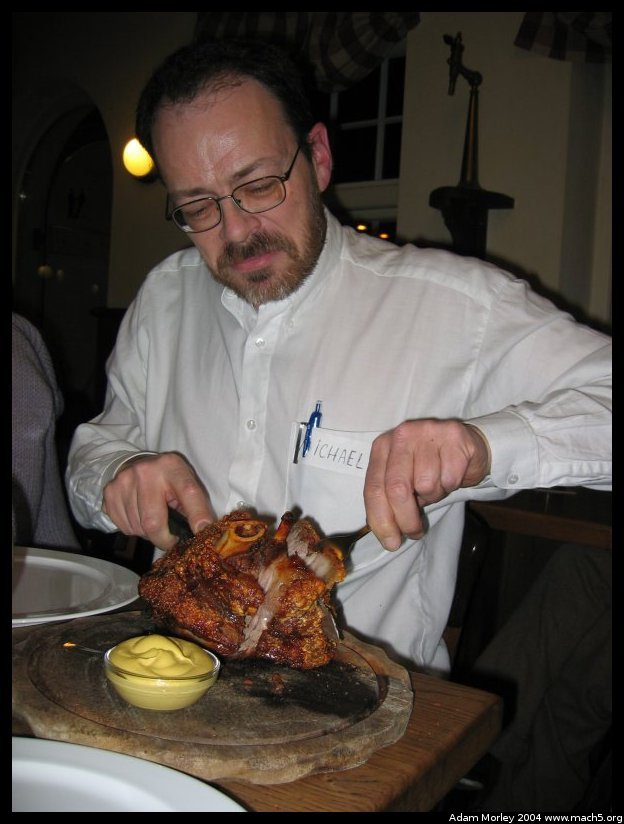

One of the places we stopped was just across the southern border of Denmark, in a town called Flensborg. Flensborg is part of the "Schleswig-Holstein" region. The border between Germany and Denmark has moved back and forth over the centuries, so this is sort of a mixing pot of Danes and Germans and the like. We drove (in a bus) from Copenhagen, stopped in Odense to see H.C. Anderson's house, and then drove on to Flensborg. Please note we left in the morning, spent a few hours in Odense, and then travled on to Germany. Quite a distance culturally, but sort of like going from Chicago to, say, Minneapolis. Or Boston to NYC. Not very far in distance.
Even cheap digicams can take decent night photos. At least with a $5 tripod. Flensborg's harbor at night.
This is a very traditional German meal. 1.3 kilos of, well, pork. It's the. . .hip joint, I guess? As my host dad said when I returned, "Bah, Germans can't cook."

This is Michael, the Chief Accountant at DIS. One of the stipulations of the contract for DIS employees is that they go on the tours with the students to act as guides during the tour. I found the personal interaction with the staff to be fascinating, as they were almost all Danish, and could provide insight into Danish life.One funky incident occured on our way to the smoky German pub where 1.3 kilos of pork was normal. We stopped because I noticed a license plate. Having been in Denmark for a bit, the license plates were different. But the license plates in Gemany had little country codes (D - aka Germany, for the English speakers) and EU (European Union) logos. We stopped and talked about what was up with them, and a short bit after we stopped, the owner of the car happend upon us (just our luck), and asked in German what the heck were we doing staring at her car. So in somewhat rusty German, we attempted to convey to her what exactly we were doing.
This didn't go well, as we were also trying to figure out the license plates, in broken German. Finally, the companion of the driver asked if we spoke Danish (obviously in German). Michael and the companion then carried on a conversation stating that we were American students and we wanted to know more about the license plates. After a short conversation, we found out that the license plates are an optional part of the EU --- and one of the many items that Denmark is not a party to. Clearly, this reinforced the notion that this region had Danish ties.
T-mobile payphones are everywhere. T-mobile is, after all, a German company. They also happen to be pink.
Flensborg harbor during the daylight. I like it better at night for some reason.
Our one-night stand. Aka the Flensborg hostel. Nice place. Kind of a long ways from anything though.
One of the pluses of DIS is that they arrange tours and other functions that can't be arranged by us normal student folks. One of the tours they arranged was of the Danish high school in Flensborg. This school is for those who are of Danish descent, but live in Germany. Or others who want to go to a Danish school. Skolen --- The School.
The front of the school.
Our Danish/Germany tour guides. Somehow, one of them ended up with a plant in her hands. They were quite friendly and some had even studied in the USA.
One of the first round doors I saw in Europe.
What the heck is that? It's a boat. Duh. Made by the Queen of Denmark. It just so happens that the Queen is quite a capable artist, and likes to give works of art to accompany her monetary gifts. This happens to be one of her works of art, which means she gave money to the school.
One of the windows in the school. This is not your average school.
The tour guides and the tourees. It's fairly straightforward to pick out the Americans and the non-Americans.
Adam can be reached at adam dot morley at gmail dot com